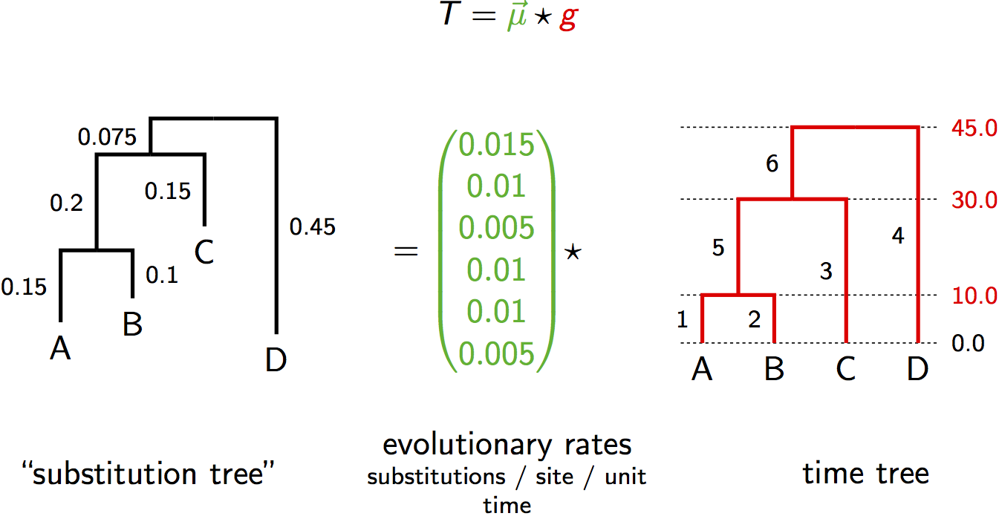

Tree space

A Euclidean two-dimensional space representing the space of all
possible time-trees for the topology ((1,2),3). There are two parameters,
x and y, one for each of the two inter-coalescent intervals, the sum of
which is the age of the root (troot = x + y). Three trees are displayed,
along with their arithmetic mean tree, also called the centroid. The
dashed lines show the path connecting each of the three trees to the
mean tree by the shortest distance (i.e. their deviations from the mean).
Tree space
The simplest non-trivial tree space (for time-trees),
representing the space of time-trees for $n = 3$ taxa sampled
contemporaneously. Each of the three non-degenerate tree topologies is
represented by a two-dimensional Euclidean space and these subspaces meet at a single shared edge representing the star
tree, which is a one-dimensional subspace and thus has a single
parameter (the age of the root). The dashed lines shows the paths of
shortest distance between the four displayed trees.
Another space of tip-labeled time-trees

Projection of tree space on 4 taxa

This is a projection of a part of 4-taxa tree space. Note the number of subspaces is actually 18, but we only show 6 of them here. Also each subspace is actually a cube, but we show them as squares by fixing the tip-most interval.
Genetic distance = rate $\times$ time
The strict molecular clock parameterization
The "substitution tree" is in units of expected substitutions, i.e. genetic distances.
Non-identifiability of rate and time

Genetic distance = rate $\times$ time
The relaxed molecular clock parameterization

The "substitution tree" is in units of expected substitutions, i.e. genetic distances.
Non-identifiability of rate and time